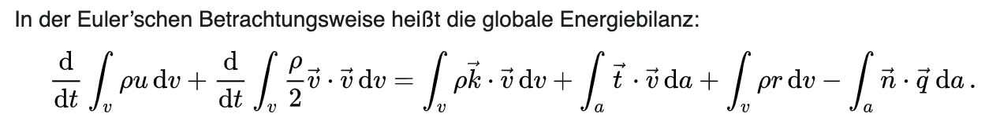

1. Einführung¶
1.1. Links¶
1.2. Editor¶
Es gibt für LaTeX mittlerweile zwei prinzipielle Möglichkeiten:
online im Webbrowser
Installation auf dem eigenen Rechner
Windows MiKTeX
Windows Tex Live
Linux ubuntuusers.de
Für uns ist im Moment die Nutzung online am einfachsten und sehr direkt umsetzbar. Daher bitte bei Overleaf einen Account (kostenlos) anlegen. Dann kann es losgehen …
1.3. Ein erstes “Hallo Welt”¶
Nachfolgend erste und einfachste LaTeX Dokument. Es muss immer eine Dokumenteklasse definiert werden und der eigentliche Inhalt (in diesem Fall nur ein einfacher Text) steht immer innerhalb von \begin{document} und \end{document}
Input
\documentclass{article}
\begin{document}
Hallo Welt.
\end{document}
Output
2. Präambel des Dokuments¶
Die Präambel beschreibt alles was vor \begin{document} steht. Dabei geht es um die Grundeinstellungen des Dokumentes. Konkret wird folgendes definiert:
Dokumentenklasse (Layout der Seite)
Pakete (ermöglichen zusätzliche Funktionen)
2.1. Dokumentklassen¶
Mit der Definition der Dokumentenklasse beginnt das LaTeX Dokument. Mit der Dokumentenklasse wird das Layout des Dokuments bestimmt.
\documentclass{name}
\begin{document}
....
\end{document}
name=
article- für kleinere Texte, beinhaltet keine Kapitelüberschriftenname=
report- Berichte, Abschlussarbeiten, beinhaltet Kapitelüberschriftenname=
book- umfangreiche Texte, beinhaltet Kapitelüberschriften und ist standardmäßig zweiseitig
Es gibt ähnliche Klassen, die zum modernen und weitverbreiteten KOMA-Skript gehören. Diese lauten dann:
name=
scrartclname=
scrreprtname=
scrbook
Wir werden im weiteren Verlauf vor allem auf scrreprt setzen, da diese Klasse nahe einer Abschlussarbeit kommt und damit gut zu uns passt.
Es gibt noch weitere Klassen zum Schreiben von Briefen (dinbrief) o.ä., die wir hier aber nicht genauer betrachten wollen. Ist der Einstieg in LaTeX geschafft, kann man diese auch schnell selbst einbinden.
2.2. sinnvolle Pakete (packages)¶
In der Präambel nach der Dokumentenklasse können Pakete (packages) verwendet werden die bestimmte Funktionen hinzufügen. Dies kann z.B. eine automatische Silbentrennung sein. Diese Pakete werden mit dem Befehl \usepackage[option]{name} eingefügt:
\documentclass{scrreprt}
\usepackage[option]{name}
\begin{document}
....
\end{document}
Besonders sinnvolle packages sind hier zusammengefasst:
\usepackage[ngerman]{babel} % deutsche Spracheinstellung
\usepackage[utf8]{inputenc} % Zeichenkodierung für UTF-8 (Unicode) falls Editor es unterstützt (bevorzugt)
% \usepackage[latin1]{inputenc} % Zeichenkodierung unter Windows für Umlaute und Sonderzeichen falls kein UTF-8 im Editor
\usepackage[T1]{fontenc} % Korrektes Trennen von Wörtern mit Umlauten und Akzenten.
\usepackage{graphicx} % Grafiken einbinden
3. Gliederung und Verzeichnisse¶
3.1. Überschriftsebenen¶
Es gibt maximal drei nummerierte Ebenen für die Dokumentstruktur:
article-Klassen \documentclass{article}:
Input
\section{Überschrift}
\subsection{Unterüberschrift}
\subsubsection{Unterunterüberschrift}
\paragraph{Letzte Chance}
Output

report/book-Klassen \documentclass{report} oder \documentclass{book}:
Input
\chapter{Kapitelüberschrift}
\section{Überschrift}
\subsection{Unterüberschrift}
\subsubsection{Unterunterüberschrift}
\paragraph{Letzte Chance}
Output
3.2. Inhaltsverzeichnis¶
Input
\tableofcontents % Inhaltsverzeichnis
\listoffigures % Abbildungsverzeichnis
Output
4. Abbildungen¶
Das Einfügen von Bildern ist in LaTeX besonders einfach und ungewohnt (wenn man Word gewohnt ist) zugleich.
EINFACH - da LaTeX die Aufgabe übernimmt, das Bild vernünftig zum Text zu positionieren.
UNGEWOHNT - da LaTEX die Aufgabe übernimmt, das Bild vernünftig zum Text zu positionieren. Daher der Rat: Erzwingen Sie nichts, sondern vertrauen Sie LaTeX.
Generell gilt für eine gute Bildposition im wissenschaftlichen Text:
Bilder werden nicht vom Text umflossen, sondern nehmen als Objekt die gesamte Textbreite ein
Bilder sollten am unteren oder oberen Rand der Seite positioniert werden, um den Textfluss nicht zu stören.
Bilder sollten, wenn möglich, die Textbreite nutzen. Eventuell auch mehrere Bilder in einer Abbildungsumgebung unterbringen, wenn es inhaltlich sinnvoll ist.
4.1. Paket graphicx¶
Um Bilder einzufügen muss das Paket graphicx verwendet werden. Dafür in die Präambel (vor \begin{document}) der Text \usepackage{graphicx} einfügt werden:
\documentclass{scrreprt}
\usepackage{graphicx}
\begin{document}
....
\end{document}
4.2. Abbildung einfügen¶
Innerhalb der document-Umgebung (nach \begin{document}) können Bilder eingefügt werden. Dafür wird eine figure-Umgebung erstellt (mit \begin{figure} und \end{figure}). Innerhalb dieser Umgebung kann dann mit \includegraphics{bild.png} z.B. eine Datei bild.png eingefügt werden. Konkret wird dies am nachfolgenden Beispiel verdeutlicht:
\begin{document}
%...
... Ut enim ad minim veniam, quis nostrud exercitation ullamco laboris nisi ut aliquid ex ea commodi consequat (s. Abb. \ref{fig:bildlabel}).
%
\begin{figure}[!h] %Postionsangabe
\centering
\includegraphics[width=60mm]{dependency.png}
\caption{Ein Bild zur Digitalisierung. Quelle: xkcd.com}
\label{fig:bildlabel}
\end{figure}
%
Quis aute iure reprehenderit in voluptate velit esse cillum dolore eu fugiat nulla pariatur. Excepteur sint obcaecat cupiditat non proident, sunt in culpa qui officia deserunt mollit anim id est laborum.
%...
\end{document}
{kind=link}
Nachfolgend nun die Erklärungen zu den Befehlen:
4.3. Referenzierungen¶
\label{label_name}(innerhalb von derfigure-Umgebung) erstellt ein label welches im Text (also außerhalb derfigure-Umgebung) mit dem Befehl\ref{label_name}referenziert werden kann. Es wird dann die zugehörige Nummer eingefügt.\includegraphics[width=60mm]{dependency.png}wird die Bilddateidependency.pngmit einer Breite von 60mm eingefügt. Die Datei liegt dabei im gleichen Verzeichnis wie die LaTeX Datei, es sind aber auch relative Pfade möglich (z.B. in einen Ordner Abbildungen\includegraphics{Abbildungen/dependency.png}). Es können Bilder mit der Dateieindung.png,.jpgund.jpegstandardmäßig verwendet werden.
4.4. Bildposition¶
Mit der Positionsangabe [!h] kann man LaTeX Hinweise zu den Positionswünschen übermitteln. Möglich sind:
h- here - bitte versuche es genau an dieser Textstellet- top - wenn möglich an Oberkante der Seiteb- bottom - wenn möglich, an Unterkante der Seitep- page - nutze eine extra Seite für die BilderMit dem
!erhöht man die Priorität seiner Forderung, man “zwingt” LaTeX zur Umsetzung.
4.5. Bildgröße¶
Die Bildgröße kann wie folgt beschrieben werden:
\includegraphics{bild.png}: Originalbreite des Bildes wird verwendet\includegraphics[width=60mm]{bild.png}: Die Breite wird auf 60mm festgelegt\includegraphics[width=0.25\textwidth]{bild.png}: Die Breite wird auf 25% der Seitenbreite festgelegt
4.6. Bilderunterschriften¶
Mit \caption{...} wird die Bildunterschrift definiert. Um die Bildunterschrift optisch ansprechender zu gestalten wird kann das Paket caption verwendet werden mit den Optionen labelfont=bf,font=small,textfont=it
...
\usepackage{caption}
\captionsetup{labelfont=bf,font=small,textfont=it}
...
\begin{document}
...
Hier der Unterschied zwischen der Standardvariante und der verbesserten Variante:
4.7. Mehrere Abbildungen in einer Figure Umgebung (subfigure)¶
Es gibt verschiedene Variante wie man mehrere Bilder in einer figure-Umgebung platzieren kann. Hier ein Beispiel in dem das Paket subcaption benutzt wird und die Bilder in einer \subcaptionbox erstellt werden:
{kind=link}
\usepackage{graphicx} % Grafiken
\usepackage{subcaption} % subfigures
\begin{document}
\begin{figure}[h!]
\centering
\label{fig:HTWK_Logos}
\subcaptionbox{HTWK}{\includegraphics[width=.45\linewidth]{HTWK.png}}
\subcaptionbox{ING}{\includegraphics[width=.45\linewidth]{ING.png}}
\caption{HTWK Logos ohne hfill}
\end{figure}
\end{document}
Bilder werden standardmäßig nebeinander ohne Abstand dargestellt (so nicht gewünscht)
{kind=link}
\usepackage{graphicx} % Grafiken
\usepackage{subcaption} % subfigures
\begin{document}
\begin{figure}[h!]
\centering
\label{fig:HTWK_Logos}
\subcaptionbox{HTWK}{\includegraphics[width=.45\linewidth]{HTWK.png}}\hfill
\subcaptionbox{ING}{\includegraphics[width=.45\linewidth]{ING.png}}
\caption{HTWK Logos ohne hfill}
\end{figure}
\end{document}
wird nach der
\subcaptionboxein\hfillverwendet, verteilt sich der Inhalt auf der Seitenbreite
5. Tabellen¶
Zugegeben, Tabellen sind nicht so einfach zu erstellen in LaTeX. Es ist weniger die Schwierigkeit, als mehr der Aufwand, den sie beim erstellen erzeugen.
5.1. Tabellenlayout¶
Wir starten mit einer einfachen 2 x 4 Tabelle. Dazu verwenden wir als äußere Klammer die table-Umgebung. Innerhalb dieser kann mit \centering die Tabelle zentriert werden. Der Inhalt der Tabelle wird im Inneren der table-Umgebung mittels der tabular-Umgebung definiert.
Bei der Definition der tabular-Umgebung werden die Spalten und die Ausrichtung erstellt:
l- linksr- rechtsc- mittig
Für den ersten Fall mit zwei mittig zentrieren Spalten sieht es dann so aus: \begin{tabular}{ c c }
Die gesamte Tabelle würde dann so aussehen:
{kind=link}
Für eine 3x3 Tabelle sieht es dann so aus:
{kind=link}
Mit | zwischen den Spaltenausrichtungen können vertikale Linien eingefügt werden:
{kind=link}
Mit \hline können horizontale Linien eingefügt werden:
{kind=link}
Um ein Tabellenheader einzufügen könnte man z.B. die Schrift mit \textbf{} fett drucken um diese hervorzuheben:
{kind=link}
5.2. Tabellenüberschrift & Verweise¶
Analog wie bei Abbildungen können mit \label{name} und \ref{name} auf Tabellennummern verwiesen werden. Mit \caption{Tabellenüberschrift} kann die Tabellenüberschrift erstellt werden.
Input
\begin{table}
\centering
\caption{Meine erste eigene Tabelle}
\label{tab:erste_Tabelle}
\begin{tabular}{|c|c|c|}
\hline
\textbf{Header1} & \textbf{Header2} & \textbf{Header3} \\
\hline
Zelle1 & Zelle2 & Zelle3 \\
\hline
Zelle4 & Zelle5 & Zelle6 \\
\hline
Zelle7 & Zelle8 & Zelle9 \\
\hline
\end{tabular}
\end{table}
%
... sind die Werte in Tabelle \ref{tab:erste_Tabelle} zusammengefasst.
Output
5.3. Tabellenposition¶
Analog zu Abbildungen kann man LaTeX mit der Positionsangabe [!h] anschließend an \begin{table} die Positionswünsche übermitteln. Möglich sind:
- `h` - here - bitte versuche es genau an dieser Textstelle
- `t` - top - wenn möglich an Oberkante der Seite
- `b` - bottom - wenn möglich, an Unterkante der Seite
- `p` - page - nutze eine extra Seite für die Bilder
- Mit dem `!` erhöht man die Priorität seiner Forderung, man "zwingt" LaTeX zur Umsetzung.
5.4. komplexere Tabelle mit zusätzlichen Paketen¶
Um komplexere Tabellen zu erzeugen sind zusätzliche Pakete wie booktabs , multirow und makecell notwendig. Nachfolgend wir dies an einem Beispiel dargestellt:
{kind=link}
\documentclass{scrreprt}
\begin{document}
\begin{table}
\begin{tabular}{lcccc}
\hline
Name & Header1 & Header2 & Header3 & Header4 \\
\hline
Name A & text text text & text text & text text & text text \\
Name B & text text & text text & text text text & text text \\
\hline
\end{tabular}
\end{table}
\end{document}
Ausgangsbeispiel ohne weitere Pakete
{kind=link}
\documentclass{scrreprt}
\usepackage{booktabs}
\begin{document}
\begin{table}
\begin{tabular}{@{} lcccc @{}}
\toprule
Name & Header1 & Header2 & Header3 & Header4 \\
\midrule
Name A & text text text & text text & text text & text text \\
Name B & text text & text text & text text text & text text \\
\bottomrule
\end{tabular}
\end{table}
\end{document}
Verwendung des Pakets
booktabsfür\toprule,\midruleund\bottomrule(verbesserte horizontale Linien)@{}am Anfang und@{}am Ende in\begin{tabular}{}verkürzt die Tabelle links und rechts auf das nötigste
{kind=link}
\documentclass{scrreprt}
\usepackage{booktabs}
\begin{document}
\begin{table}
\begin{tabular}{@{} lcccc @{}}
\toprule
\multicolumn{1}{c}{Name} & Header1 & Header2 & Header3 & Header4 \\
\midrule
Name A & text text text & text text & text text & text text \\
Name B & text text & text text & text text text & text text \\
\bottomrule
\end{tabular}
\end{table}
\end{document}
\multicolumn{1}{c}{Name}um die ÜberschriftNamezu zentrieren obwohl die Spalte eigentlich linksausgerichtet ist
{kind=link}
\documentclass{scrreprt}
\usepackage{booktabs}
\begin{document}
\begin{table}
\begin{tabular}{@{} lcccc @{}}
\toprule
\multicolumn{1}{c}{Name} & \multicolumn{2}{c}{Overhead1} & \multicolumn{2}{c}{Overhead2} \\
& Header1 & Header2 & Header3 & Header4 \\
\midrule
Name A & text text text & text text & text text & text text \\
Name B & text text & text text & text text text & text text \\
\bottomrule
\end{tabular}
\end{table}
\end{document}
\multicolumn{2}{c}{Text}fasst zwei Spalten zusammen (in dem Beispiel für die Überschrift)
{kind=link}
\documentclass{scrreprt}
\usepackage{booktabs, multirow}
\begin{document}
\begin{table}
\begin{tabular}{@{} lcccc @{}}
\toprule
\hfil\multirow{2}{*}{Name} & \multicolumn{2}{c}{Overhead1} & \multicolumn{2}{c}{Overhead2} \\
& Header1 & Header2 & Header3 & Header4 \\
\midrule
Name A & text text text & text text & text text & text text \\
Name B & text text & text text & text text text & text text \\
\bottomrule
\end{tabular}
\end{table}
\end{document}
\multirow{2}{*}{Name}zentriert Name vertikal in dem es zwei Zeilen zusammenfuegt (durch Paketmultirow)\hfilvor\multirowsorgt dafür das Name horizontal wieder zentriert wird
{kind=link}
\documentclass{scrreprt}
\usepackage{booktabs, multirow}
\begin{document}
\begin{table}
\begin{tabular}{@{} lcccc @{}}
\toprule
\hfil\multirow{2}{*}{\textbf{Name}} & \multicolumn{2}{c}{\textbf{Overhead1}} & \multicolumn{2}{c}{\textbf{Overhead2}} \\
& Header1 & Header2 & Header3 & Header4 \\
\midrule
Name A & text text text & text text & text text & text text \\
Name B & text text & text text & text text text & text text \\
\bottomrule
\end{tabular}
\end{table}
\end{document}
mit
\textbf{}kann die Überschrift zusätzlich hervorgehoben werden
{kind=link}
\documentclass{scrreprt}
\usepackage{booktabs, multirow, makecell}
\begin{document}
\begin{table}
\begin{tabular}{@{} lcccc @{}}
\toprule
\hfil\multirow{2}{*}{\textbf{Name}} & \multicolumn{2}{c}{\textbf{Overhead1}} & \multicolumn{2}{c}{\textbf{Overhead2}} \\
& Header1 & Header2 & Header3 & Header4 \\
\midrule
Name A & \makecell[c]{text oben \\ text unten} & text text & text text & text text \\
Name B & text text & text text & text text text & text text \\
\bottomrule
\end{tabular}
\end{table}
\end{document}
mit
\makecell[c]{text oben \\ text unten}wurde ein Textumbruch innerhalb einer Zelle erzeugt (c=zentriert) (Paketmakecell)
6. Übung (Text, Abbildungen, Tabelle)¶
Um das nun gesehene selbst anzuwenden übertragen wir nun den Text, Abbildungen und die Tabelle von folgender Seite auf ein eigenes LaTeX Dokument:
Der anthropogene Treibhauseffekt
Hinweise:
Verwenden Sie
\labelund\reffür die Verweise auf die AbbildungenErstellen Sie Bildunterschriften und Tabellenüberschriften
7. Textformatierung¶
fettgedruck: fettgedruckter Text wird mit dem
\textbf{...}erzeugtkursiv: kursiver Text wird mit dem
\textit{...}erzeugtunterstrichen: unterstrichener Text wird mit dem
\underline{...}erzeugt
Input
Das ist ein \textbf{fettgedruckter Text} und das ein \textit{kursiver Text} und dieser \underline{Text ist unterstrichen}
Output
8. Listen¶
Aufählungen werden in der itemize-Umgebung erzeugt. Ein Listeneinträge startet immer mit \item. Der Text kann eine beliebige Länge haben und der Textumbruch erfolgt automatisch sobald nicht wieder ein neuer Anstrich mit \verb|\item| erfolgt
{kind=link}
Für Untereinträge wird jeweils eine neue itemize-Umgebung erzeugt
{kind=link}
Nummerierte Auflistungen werden mit der enumerate-Umgebung analog erzeugt:
{kind=link}
Für Untereinträge erfolgen hier analog:
{kind=link}
9. Mathematische Umgebungen¶
Mathematische Formeln können innerhalb des Textes oder als seperate Gleichung verwendet werden. Der verwendete Syntax ist bei beiden Fällen der gleiche. Zur Verwendung innerhalb des Textes wird dieser zwischen zwei Dollarzeichen eingebettet. Für eine Gleichung wird die equation-Umgebung verwendet, dort sind die Dollarzeichen nicht notwendig. Hier ein einfaches Beispiel mit beiden Anwendungen:
Hier ein erstes Beispiel:
\documentclass{scrreprt}
\begin{document}
Der Anstieg $m$ ergibt sich auf den Differenzen von $x$ und $y$ zu:
\begin{equation}
m=\frac{\Delta y}{\Delta x}=\frac{y_1 - y_0}{x_1 - x_0}
\end{equation}
\end{document}
{kind=link}
Zur Erklärung:
Mit dem Befehl
\frac{Zähler}{Nenner}können Brüche dargestellt werden.Mit
\Deltawird der griechische Buchstabe Delta dargestellt.Mit
_wird ein Text tiefgestellt (wenn mehrere Zeichen mit Leerzeichen tiefgestellt werden soll müssen diese in geschweiften Klammern gesetzt werden, z.B.x_{0,init})
Die Gleichung innerhalb der equation-Umgebung wird automatisch nummeriert. Da in diesem Fall kein Kapitel erstellt wird steht eine 0 in der Nummerierung. Mit einem Kapitel sieht es dann wie folgt aus:
\documentclass{scrreprt}
\begin{document}
\chapter{Einleitung}
Der Anstieg $m$ ergibt sich auf den Differenzen von $x$ und $y$ zu:
\begin{equation}
m=\frac{\Delta y}{\Delta x}=\frac{y_1 - y_0}{x_1 - x_0}
\end{equation}
\end{document}
{kind=link}
9.1. Zusammenfassung innerhalb der mathematischen Umgebung¶
griechische Buchstaben z.B.
\alphaoder pi mit\piQuadratwurzel
\sqrt{}.. kubische Wurzel\sqrt[3]{}\sin(),\cos()…Brüche mit
\frac{}{}hochstellen mit
^bzw._{}tiefstellen mit
_bzw._{}\left(und\right(große runde Klammern\left[und\right[große eckige Klammern
Weiterführendes Material dazu findet man in der Overleaf Dokumentation^x
9.2. Gleitkommawerte und Einheiten¶
Bei Gleitkommawerte und Einheiten werden standardmäßig von LaTeX nicht richtig dargestellt:
Bei Gleitkommawerten wird durch das
,ein Leerzeichen eingefügt, weil LaTeX davon ausgeht, dass es sich um eine Auflistung handelt.Einheiten werden ebenfalls kursiv dargestellt und ohne Leerzeichen. Dies entspricht jedoch nicht den gängigen Vorgaben.
Am nachfolgenden Beispiel kann man die falsche Darstellung (Standardvariante) und eine richtige Darstellung sehen:
Nachfolgend der Code für die Standardvariante und zwei Versionen mit der richtigen Darstellung:
{kind=link}
\documentclass{scrreprt}
\begin{document}
$37{,}58\,\mathrm{km/h}$
\end{document}
{kind=link}
Komma in geschweiften Klammern
{,}halber Zeilenabstand nach Zahl mit
\,kursive Schrift entfernen für Einheiten mit
\mathrm{}
9.3. Wertebereiche¶
Mit \SIrange{}{} können Wertebereiche dargestellt werden. Damit diese im Deutschen mit dem Wort bis richtig dargestellt werden, muss der Parameter ngerman in der Klassendefinition übergeben werden:
{kind=link}
{kind=link}
9.4. Einheiten in Tabellen¶
Auf der Seite von Tobias Weh zur dem Einheitenpaket siunitx gibt es noch ein schönes Beispiel für eine Tabelle mit Einheiten. Dabei werden die Zahlen automatisch gerundet und entsprechend dem Dezimantrenner ausgerichtet.
{kind=link}
\documentclass{scrreprt}
\usepackage{booktabs}
\usepackage{siunitx}
\sisetup{
locale = DE,
per-mode = fraction,% | reciprocal | fraction | …
% separate-uncertainty,
% exponent-to-prefix,
prefixes-as-symbols = false,
list-units = brackets,% | single | repeat
range-units = brackets,% | single | repeat
multi-part-units = brackets,% | single | repeat
table-unit-alignment = left,
}
\begin{document}
\begin{table}[hb]
\centering
\caption{Naturkonstanten}
\begin{tabular}{
l
S[round-mode=places, round-precision=2]
s[per-mode=symbol]
}
\toprule
{Name} & {Wert} & {Einheit} \\
\midrule
Lichtgeschwindigkeit $c$ & 2,99792458e8 & m/s \\
Gravitationskonstante $\gamma$ & 6,67428e-11 &
\N\m\squared\per\kg\squared \\
Elementarladung $e$ & 1,602176487e-19 & \coulomb \\
\bottomrule
\end{tabular}
\end{table}
\end{document}
10. Übung (mathematische Umbgeung)¶
Aufgabe
Gegeben ist eine Gleichung von Wikipedia (https://de.wikipedia.org/wiki/Kontinuumsmechanik).
{kind=link}
Setzen Sie diese Gleichung ebenso in LaTeX.
Lösung
Note
... globale Energiebilanz:
\[
\frac{\mathrm{d}}{\mathrm{d}t}\int_v\rho u\,\mathrm{d}v
+\frac{\mathrm{d}}{\mathrm{d}t}\int_v\frac{\rho}{2}\vec{v}\cdot\vec{v}\,\mathrm{d}v =
\int_v\rho\vec{k}\cdot\vec{v}\,\mathrm{d}v
+ \int_a\vec{t}\cdot\vec{v}\,\mathrm{d}a
+ \int_v\rho r \,\mathrm{d}v
-\int_a\vec{n}\cdot\vec{q}\,\mathrm{d}a \quad.
\]
{kind=link}
11. Literaturverzeichnis¶
11.1. Literaturverwaltung mit Zotero¶
Die HTWK Leipzig stellt für den Umgang mit Zotero selbst verschiedene Tutorial-Videos zur Verfügung.
11.2. Einbindung der Literaturdatenbank in LaTeX¶
Hinweis: In Overleaf lässt auch direkt der Zotero-Account verknüpfen, so dass Overleaf die BiB-Datei immer automatisch aktualisiert, wenn sich etwas in Zotero ändert. Dies ist aber wohl nur für Premium-Nutzer von Overleaf verfügbar, so dass wir hier nicht darauf eingehen.
Ist die Datenbank in Zotero gefüllt, kann direkt aus der Bibliothek im Zotero eine BIBLaTeX-Datei erzeugt werden. Dazu unter Datei > Bibliothek exportieren... anklicken. Dann erhält man ein Dialogfenster:
{kind=link}
In diesem Fenter als Format BibLaTeX auswählen, mit OK bestätigen und dann die Bib-Datei im Ordner der LaTeX-Datei mit gewünschten Namen abspeichern (z.B. “mybib.bib”).
11.3. Literatur in LaTeX¶
Eine sehr gute Zusammenfassung zur Literatur in LaTeX gibt es in der Overleaf Dokumentation (englisch). Im folgenden werden ein paar Grundlagen vermittelt:
Wir nutzen das Paket BiBLaTeX, die moderne Form der Literaturreferenzierung. Dazu muss man
das Paket
biblatexladendie Bib-Datei einbinden mit
\addbibresource{name.bib}(dort stehen alle Quellen drin)am Ende des Dokumentes das Literaturverzeichnis einbinden (mit Option im Inhaltsverzeichnis sichtbar zu machen) mit
\printbibliography[heading=bibintoc]
Um erstmal anzufangen erstellen wir eine Beispiel Bib-Datei die auch in der Ovearleaf Dokumentation verwendet wird. In dieser sind 4 verschiedene Quellen eingetragen. Wir erzeugen eine Datei mit dem Namen sample.bib und fügen folgenden Inhalt ein:
@article{einstein,
author = "Albert Einstein",
title = "{Zur Elektrodynamik bewegter K{\"o}rper}. ({German})
[{On} the electrodynamics of moving bodies]",
journal = "Annalen der Physik",
volume = "322",
number = "10",
pages = "891--921",
year = "1905",
DOI = "http://dx.doi.org/10.1002/andp.19053221004",
keywords = "physics"
}
@book{dirac,
title = {The Principles of Quantum Mechanics},
author = {Paul Adrien Maurice Dirac},
isbn = {9780198520115},
series = {International series of monographs on physics},
year = {1981},
publisher = {Clarendon Press},
keywords = {physics}
}
@online{knuthwebsite,
author = "Donald Knuth",
title = "Knuth: Computers and Typesetting",
url = "http://www-cs-faculty.stanford.edu/~uno/abcde.html",
addendum = "(accessed: 01.09.2016)",
keywords = "latex,knuth"
}
@inbook{knuth-fa,
author = "Donald E. Knuth",
title = "Fundamental Algorithms",
publisher = "Addison-Wesley",
year = "1973",
chapter = "1.2",
keywords = "knuth,programming"
}
Der komplette Workflow wird nun an zwei verschiedenen Zitierstilen (numeric und alphabetic) dargestellt:
Input
\documentclass{article}
\usepackage[
backend=biber,
style=numeric,
sorting=none
]{biblatex} % Literatur-Paket mit Einstellungen
\usepackage[ngerman]{babel} % deutsches Sprachpaket
\addbibresource{sample.bib} % import Bib-Datei
\begin{document}
Quelle1 (Einstein) \cite{einstein} ... Quelle2 (Dirac) \cite{dirac} ... Quelle1 (Einstein) noch mal \cite{einstein} ... Quelle3 (Knuth) \cite{knuthwebsite}
\printbibliography % Literaturverzeichnis einfügen
\end{document}
{kind=link}
Input
\documentclass{article}
\usepackage[
backend=biber,
style=alphabetic,
sorting=nyt
]{biblatex} % Literatur-Paket mit Einstellungen
\usepackage[ngerman]{babel} % deutsches Sprachpaket
\addbibresource{sample.bib} % import Bib-Datei
\begin{document}
Quelle1 (Einstein) \cite{einstein} ... Quelle2 (Dirac) \cite{dirac} ... Quelle1 (Einstein) noch mal \cite{einstein} ... Quelle3 (Knuth) \cite{knuthwebsite}
\printbibliography % Literaturverzeichnis einfügen
\end{document}
Output

mit \cite{label} wird die Quelle zitiert
Einstellungen im Paket
biblatexstyle=alphabeticalphabetischer Stil (Quellen mit Autornamen und Jahr indiziert, hilft dem Leser die Quellen besser zuzuordnen ohne ins Literaturverzeichnis zu schauen)sorting=nytSortierung nach Name, Jahr und Titel im Literaturverzeichnis
Nur die Quellen aus der Bib-Datei die mit \cite{} referenziert werden, werden auch im Literaturverzeichnis dargestellt. Die Bib-Datei kann dabei also auch viel größer sein und nicht verwendete Quellen werden einfach nicht angezeigt.
Um mehrere Quellen (z.B. label1, label2 und label3) zu zitieren werden diese per Komma in \cite{label1,label2,label3} Befehl getrennt:
{kind=link}
Um auf eine bestimmte Seite innerhalb der Quelle zu referenzieren kann dies mit eckigen Klammern als Option an den \cite[]{} Befehl verwendet werden:
{kind=link}
Um das Literaturverzeichnis im Inhaltsverzeichnis anzuzeigen gibt es eine Option im Befehl \printbibliography :
\printbibliography[heading=bibintoc]
Zusätzlich können mit dem Befehl \ExecuteBibliographyOption{} Einstellungen vorgenommen werden um z.B. ISBN und URLs zu deaktivieren:
\usepackage[
backend=biber,
style=numeric,
sorting=none
]{biblatex}
\ExecuteBibliographyOptions{
isbn=false, %keine isbn anzeigen
url=false %keine url anzeigen
}
Die Option url=false zeigt weiterhin alle Quellen an die mit @online gekennzeichnet sind. Wenn man jedoch den Typ Webseite von Zotero exportiert, wird dieser als Typ @misc umgewandelt und die URL wird nicht mit ausgegeben. Folgender Code vom User mit dem Namen moewe von stackexchange.com kann in LaTeX eingefügt werden um den Typ @misc in Typ @online zu ändern, vorrausgesetzt man hat keine Quelle die wirklich als @misc gekennzeichnet werden sollte:
\DeclareSourcemap{
\maps[datatype=bibtex, overwrite=true]{
\map{
\step[typesource=misc, typetarget=online]
}
}
}
Noch mehr Informationen finden sich in der offizielen Dokumentation zum Paket biblatex.